StepSafe · verifier mockups · no product code
Same jobs as the live site: live map, verify queue, and hazard detail, on the phone app, on stepsafe.miami, and on a 1440 desktop. The chrome is the change. Tesla subtraction, Apple quiet. Orange only where a hazard is speaking.
The switch updates every still on this page. Open a screen for the in-product toggle, the map layer, and the shortcut checkbox. Direction notes
Phone frame, 390-wide screen. Bottom tabs. Hazard is a pushed screen.
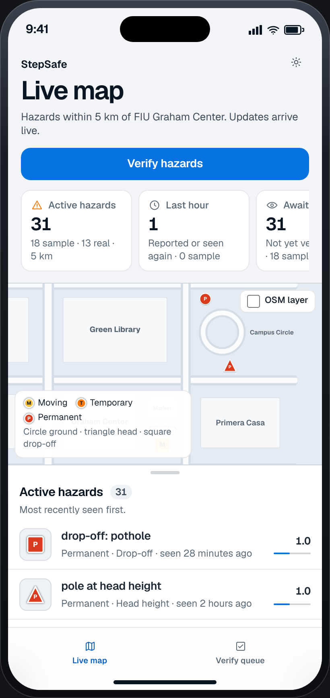
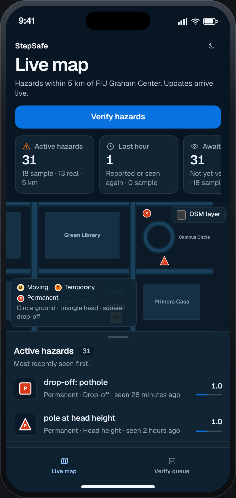
Live mapHeading, five summaries, map, feed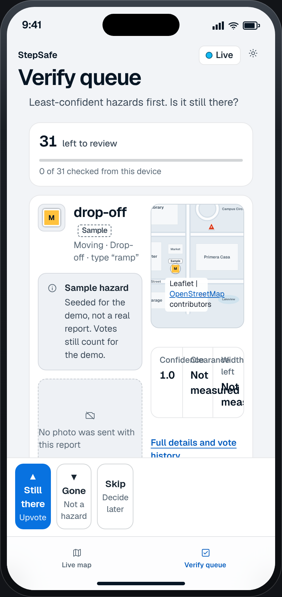
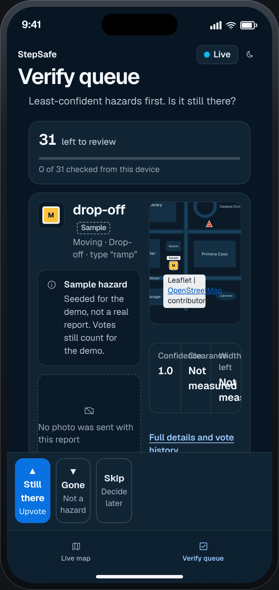
Verify queueStill there, Gone, Skip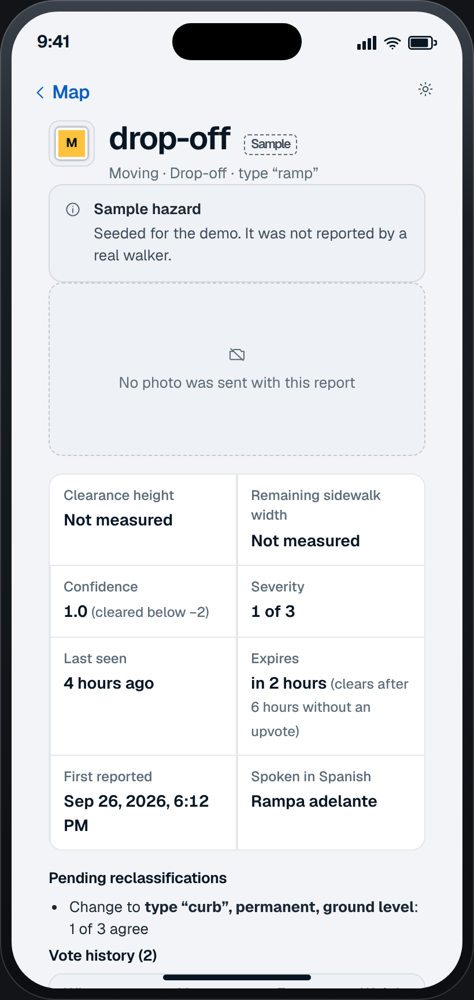
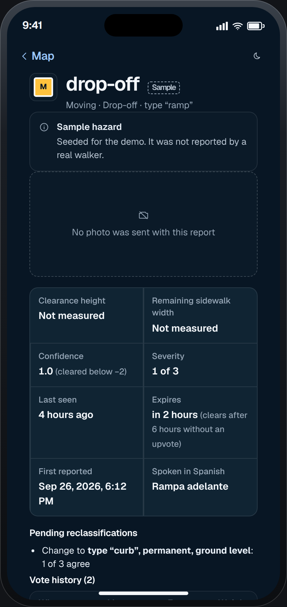
HazardFull record for the queued rampstepsafe.miami at 390. Logo, two tabs, map above the feed.
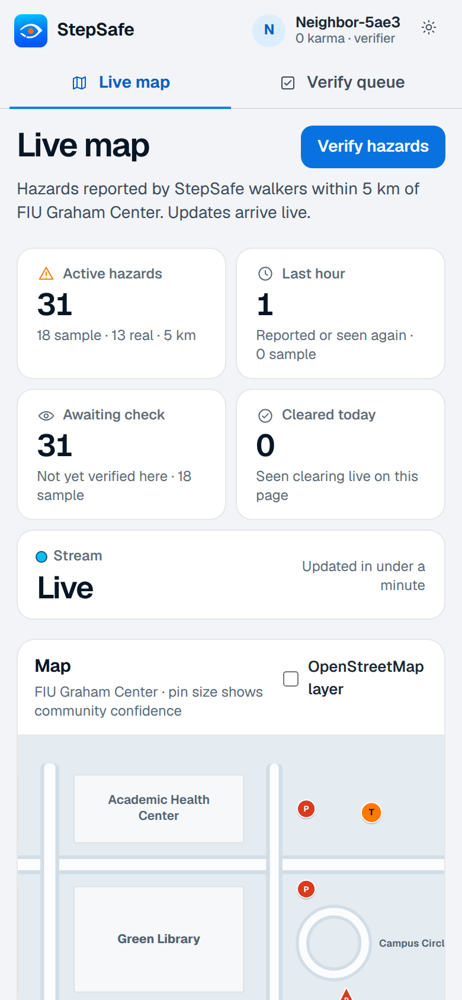
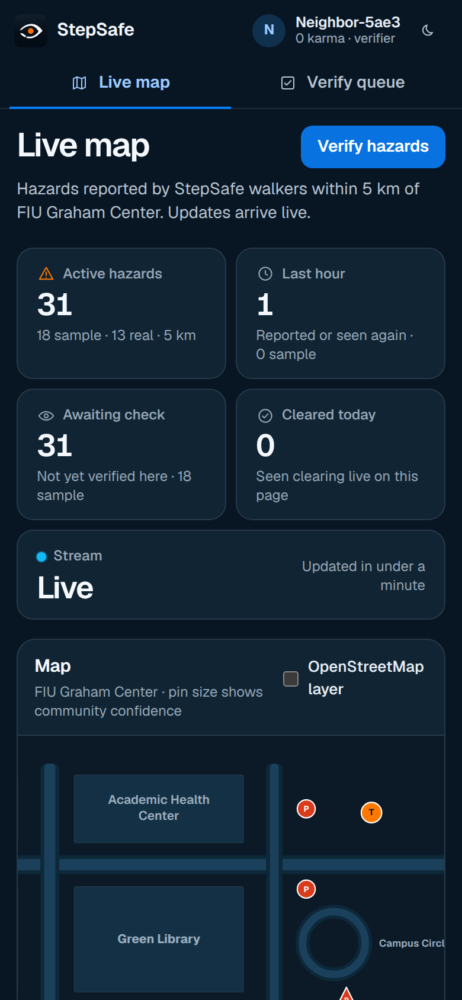
Live mapTop tabs, summary cards, map, feed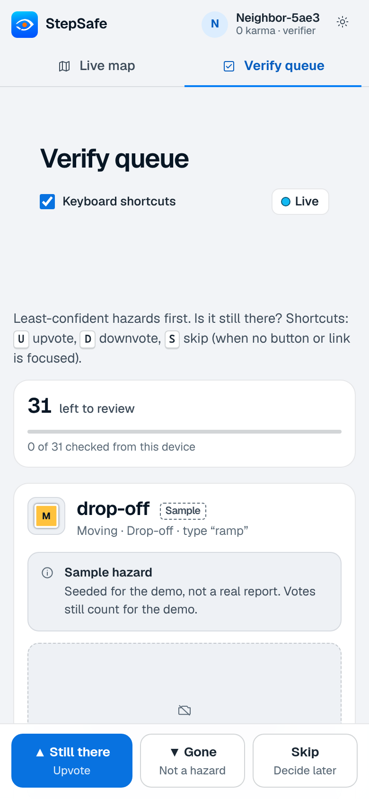
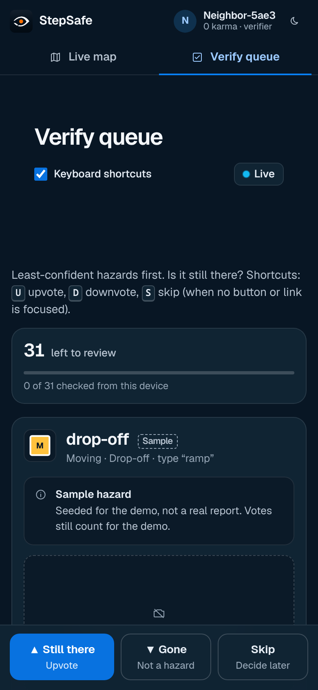
Verify queueSingle column, sticky vote bar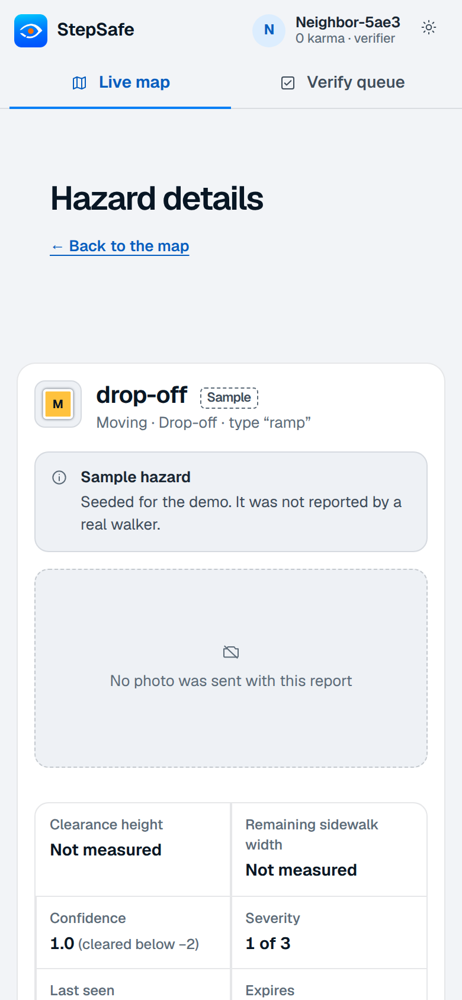
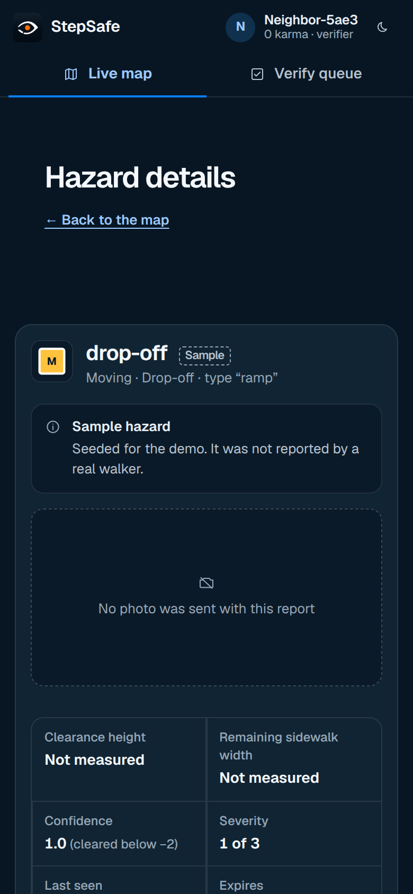
HazardDetail, votes, location1440. Left rail, five summaries, map beside the active-hazard feed.